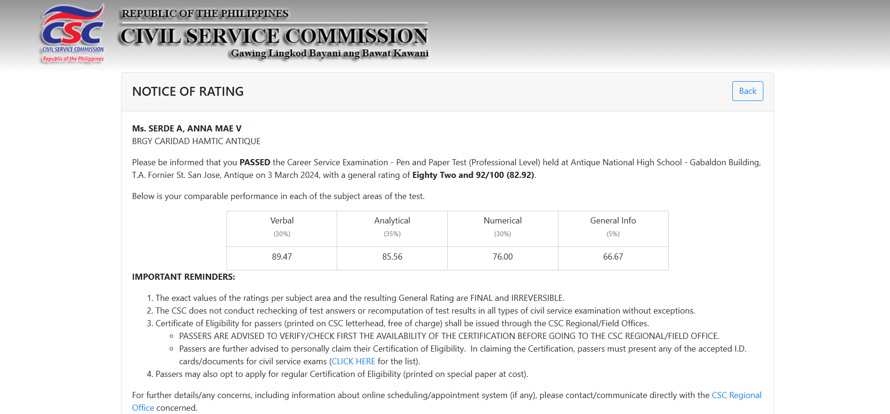
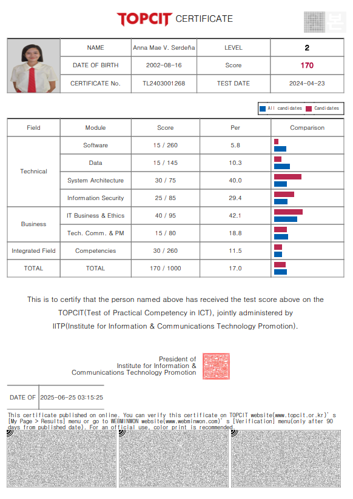
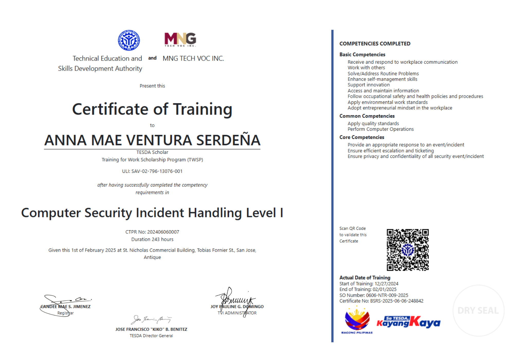

Certifications & Eligibility
Civil Service Examination – Professional Level
Passed the national eligibility examination qualifying for government professional positions in the Philippines.
Visit CSC Website

Test of Practical Competency in ICT (TOPCIT) – Level 2
Certified in ICT competency, covering software development, database management, and IT-related problem solving.
Visit TOPCIT Korea

Computer Security Incident Handling (CSIH) – NC I
Certified for entry-level skills in responding to and managing basic computer security incidents.
Visit TESDA Website
